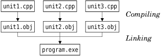

|
|
This appendix provides a short introduction to C++ for developers who already know Java or C#. It assumes that you are familiar with object-oriented concepts such as inheritance and polymorphism and that you want to learn C++. To avoid making this book an unwieldy 1500 page doorstop by including a complete C++ primer, this appendix confines itself to essentials. It presents the basic knowledge and techniques necessary to understand the programs presented in the rest of the book, with enough information to start developing cross-platform C++ GUI applications using Qt.
At the time of this writing, C++ is the only realistic option for developing cross-platform, high-performance, object-oriented GUI applications. Its detractors usually point out that Java or C#, which dropped C compatibility, is nicer to use; in fact, Bjarne Stroustrup, the inventor of C++, noted in The Design and Evolution of C++ (Addison-Wesley, 1994) that "within C++, there is a much smaller and cleaner language struggling to get out".
Fortunately, when we program with Qt, we usually stick to a subset of C++ that is very close to the utopian language envisioned by Stroustrup, leaving us free to concentrate on the problem at hand. Furthermore, Qt extends C++ in several respects, through its innovative "signals and slots" mechanism, its Unicode support, and its foreach keyword.
In the first section of this appendix, we will see how to combine C++ source files to obtain an executable program. This will lead us to explore core C++ concepts such as compilation units, header files, object files, and libraries—and to get familiar with the C++ preprocessor, compiler, and linker.
Then we will turn to the most important language differences between C++, Java, and C#: how to define classes, how to use pointers and references, how to overload operators, how to use the preprocessor, and so on. Although the C++ syntax is superficially similar to that of Java and C#, the underlying concepts differ in subtle ways. At the same time, as an inspirational source for Java and C#, the C++ language has a lot in common with these two languages, including similar data types, the same arithmetic operators, and the same basic control flow statements.
The last section is devoted to the Standard C++ library, which provides ready-made functionality that can be used in any C++ program. The library is the result of more than thirty years of evolution, and as such it provides a wide range of approaches including procedural, object-oriented, and functional programming styles, and both macros and templates. Compared with the libraries provided with Java and C#, the Standard C++ library is quite narrow in scope; for example, it has no support for GUI programming, multithreading, databases, internationalization, networking, XML, or Unicode. To develop in these areas, C++ programmers are expected to use various (often platform-specific) third-party libraries.
This is where Qt saves the day. Qt began as a cross-platform GUI toolkit (a set of classes that makes it possible to write portable graphical user interface applications) but rapidly evolved into a full-blown application development framework that partly extends and partly replaces the Standard C++ library. Although this book uses Qt, it is useful to know what the Standard C++ library has to offer, since you may have to work with code that uses it.
A C++ program consists of one or more compilation units. Each compilation unit is a separate source code file, typically with a .cpp extension (other common extensions are .cc and .cxx) that the compiler processes in one run. For each compilation unit, the compiler generates an object file, with the extension .obj (on Windows) or .o (on Unix and Mac OS X). The object file is a binary file that contains machine code for the architecture on which the program will run.
Once all the .cpp files have been compiled, we can combine the object files together to create an executable using a special program called the linker. The linker concatenates the object files and resolves the memory addresses of functions and other symbols referenced in the compilation units.
When building a program, exactly one compilation unit must contain a main() function that serves as the program's entry point. This function doesn't belong to any class; it is a global function. The process is shown schematically in Figure D.1.

Unlike Java, where each source file must contain exactly one class, C++ lets us organize the compilation units as we want. We can implement several classes in the same .cpp file, or spread the implementation of a class across several .cpp files, and we can give the source files any names we like. When we make a change in one particular .cpp file, we need to recompile only that file and then relink the application to create a new executable.
Before we go further, let's quickly review the source code of a trivial C++ program that computes the square of an integer. The program consists of two compilation units: main.cpp and square.cpp.
Here's square.cpp:
1 double square(double n) 2 { 3 return n * n; 4 }
This file simply contains a global function called square() that returns the square of its parameter.
Here's main.cpp:
1 #include <cstdlib> 2 #include <iostream> 3 double square(double); 4 int main(int argc, char *argv[]) 5 { 6 if (argc != 2) { 7 std::cerr << "Usage: square <number>" << std::endl; 8 return 1; 9 } 10 double n = std::strtod(argv[1], 0); 11 std::cout << "The square of " << argv[1] << " is " 12 << square(n) << std::endl; 13 return 0; 14 }
The main.cpp source file contains the main() function's definition. In C++, this function takes an int and a char * array (an array of character strings) as parameters. The program's name is available as argv[0] and the command-line arguments as argv[1], argv[2], ..., argv[argc - 1]. The parameter names argc ("argument count") and argv ("argument values") are conventional. If the program doesn't access the command-line arguments, we can define main() with no parameters.
The main() function uses strtod() ("string to double"), cout (C++'s standard output stream), and cerr (C++'s standard error stream) from the Standard C++ library to convert the command-line argument to a double and to print text to the console. Strings, numbers, and end-of-line markers (endl) are output using the << operator, which is also used for bit-shifting. To access this standard functionality, we need the #include directives on lines 1 and 2.
All the functions and most other items in the Standard C++ library are in the std namespace. One way to access an item in a namespace is to prefix its name with the namespace's name using the :: operator. In C++, the :: operator separates the components of a complex name. Namespaces make large multi-person projects easier because they help avoid name conflicts. We cover them later in this appendix.
The declaration on line 3 is a function prototype. It tells the compiler that a function exists with the given parameters and return value. The actual function can be located in the same compilation unit or in another compilation unit. Without the function prototype, the compiler wouldn't let us call the function on line 12. Parameter names in function prototypes are optional.
The procedure to compile the program varies from platform to platform. For example, to compile on Solaris with the Sun C++ compiler, we would type the following commands:
CC -c main.cpp CC -c square.cpp CC main.o square.o -o square
The first two lines invoke the compiler to generate .o files for the .cpp files. The third line invokes the linker and generates an executable called square, which we can run as follows:
./square 64
This run of the program outputs the following message to the console:
The square of 64 is 4096
To compile the program, you probably want to get help from your local C++ guru. Failing this, you can still read the rest of this appendix without compiling anything and follow the instructions in Chapter 1 to compile your first C++/Qt application. Qt provides tools that make it easy to build applications on all platforms.
Back to our program: In a real-world application, we would normally put the square() function prototype in a separate file and include that file in all the compilation units where we need to call the function. Such a file is called a header file and usually has a .h extension (.hh, .hpp, and .hxx are also common). If we redo our example using the header file approach, we would create a file called square.h with the following contents:
1 #ifndef SQUARE_H 2 #define SQUARE_H 3 double square(double); 4 #endif
The header file is bracketed by three preprocessor directives (#ifndef, #define, and #endif). These directives ensure that the header file is processed only once, even if the header file is included several times in the same compilation unit (a situation that can arise when header files include other header files). By convention, the preprocessor symbol used to accomplish this is derived from the file name (in our example, SQUARE_H). We will come back to the preprocessor later in this appendix.
The new main.cpp file looks like this:
1 #include <cstdlib> 2 #include <iostream> 3 #include "square.h" 4 int main(int argc, char *argv[]) 5 { 6 if (argc != 2) { 7 std::cerr << "Usage: square <number>" << std::endl; 8 return 1; 9 } 10 double n = std::strtod(argv[1], 0); 11 std::cout << "The square of " << argv[1] << " is " 12 << square(n) << std::endl; 13 return 0; 14 }
The #include directive on line 3 expands to the contents of the file square.h. Directives that start with a # are picked up by the C++ preprocessor before the compilation proper takes place. In the old days, the preprocessor was a separate program that the programmer invoked manually before running the compiler. Modern compilers handle the preprocessor step implicitly.
The #include directives on lines 1 and 2 expand to the contents of the cstdlib and iostream header files, which are part of the Standard C++ library. Standard header files have no .h suffix. The angle brackets around the file names indicate that the header files are located in a standard location on the system, and double quotes tell the compiler to look in the current directory. Includes are normally gathered at the top of a .cpp file.
Unlike .cpp files, header files are not compilation units in their own right and do not produce any object files. Header files may only contain declarations that enable different compilation units to communicate with each other. Consequently, it would be inappropriate to put the square() function's implementation in a header file. If we did so in our example, nothing bad would happen, because we include square.h only once, but if we included square.h from several .cpp files, we would get multiple implementations of the square() function (one per .cpp file that includes it). The linker would then complain about multiple (identical) definitions of square() and refuse to generate an executable. Conversely, if we declare a function but never implement it, the linker complains about an "unresolved symbol".
So far, we have assumed that an executable consists exclusively of object files. In practice, it often also links against libraries that implement ready-made functionality. There are two main types of libraries:
Static libraries are put directly into the executable, as though they were object files. This ensures that the library cannot get lost but increases the size of the executable.
Dynamic libraries (also called shared libraries or DLLs) are located at a standard location on the user's machine and are automatically loaded at application startup.
For the square program, we link against the Standard C++ library, which is implemented as a dynamic library on most platforms. Qt itself is a collection of libraries that can be built either as static or as dynamic libraries (the default is dynamic).
|
|
| Converted from CHM to HTML with chm2web Pro 2.85 (unicode) |